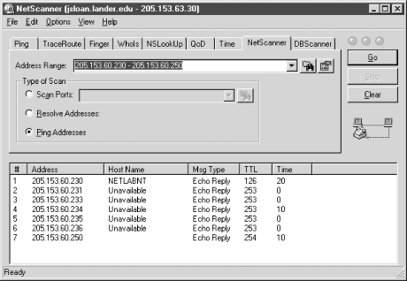

6.7. Microsoft Windows
Traditionally, commercial tools for
network management have typically been developed for Unix platforms
rather than Windows. Those available under Windows tended not to
scale well. In the last few years this has been changing rapidly, and
many of the standard commercial tools are now available for Windows
platforms.
A number of packages support IP scanning
under Windows. These include freeware, shareware, and commercial
packages. Generally, these products are less sophisticated than
similar Unix tools. For example, stealth scanning is usually lacking
under Windows. (Personally, I'm not sure this is something to
complain about.)
Nonetheless, there are a number of very impressive noncommercial
tools for Windows. In fact, considering the quality and functionality
of some of these free packages, it is surprising that the commercial
packages are so successful. But free software, particularly in
network management, seems to have a way of becoming commercial
software over time -- once it has matured and developed a
following.
6.7.1. Cyberkit
One particularly impressive tool is Luc
Neijens'
cyberkit. The package works well,
has a good help system, and implements a wide range of functions in
one package. In addition to IP scanning, the program includes, among
others,
ping,
traceroute,
finger,
whois,
nslookup, and NTP synchronization.
With
cyberkit, you can scan a range of addresses
within an address space or you can read a set of addresses from a
file.
Figure 6-3 shows an example of such a scan.

Figure 6-3. IP scan with cyberkit
Here you can see how to specify a range of IP addresses. The button
to the right of the Address Range field will assist you in specifying
an address range or entering a filename. If you want to use a file,
you need enter only the path and name of a text file containing a set
of addresses, one address per line. Notice that you can use the same
tab to resolve addresses or do port scans of each address. There are
a number of other tools you might consider.
getif, which makes heavy use of SNMP, is
described in
Chapter 7, "Device Monitoring with SNMP". You might also want to
look at
Sam Spade. (
Sam
Spade is particularly helpful when dealing with spamming
and other email related problems.)
6.7.2. Other Tools for Windows
The good news is that
Tcl,
Tk,
scotty, and
tkined are all
available for Windows platforms.
Tcl and
Tk seem to be pretty stable ports.
tkined is usually described as an early alpha
port but seems to work fairly well. You'll want a three-button
mouse. The interface is almost identical to the Unix version, and I
have moved files between Windows and Unix platforms without problems.
For example, you could create maps on one and move them to another
for monitoring. Moreover, the
tnm extensions
have been used as the basis for additional tools available for
Windows.
If you use Microsoft Exchange
Server, a topology diagramming tool called
emap
can be downloaded from Microsoft. It will read an Exchange directory
and automatically generate a
Visio diagram for
your site topology. Of course, you'll need
Visio to view the results.
Finally,
if you are using NetBIOS, you might want to look at the
nbtstat utility. This command displays protocol
statistics and current TCP connections using NetBIOS over TCP/IP
(NBT). You can use this command to poll remote NetBIOS name tables
among other things. The basic syntax is returned if you call the
program with no options.
 |  |  |
| 6.6. Politics and Security |  | 7. Device Monitoring with SNMP |